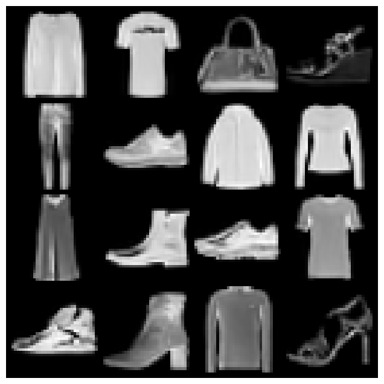
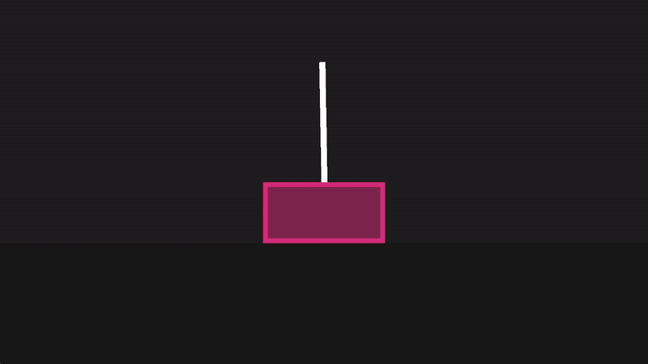
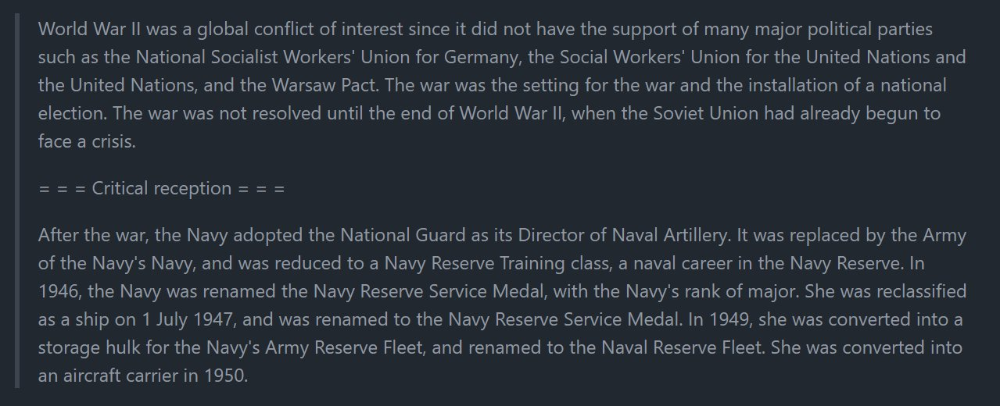
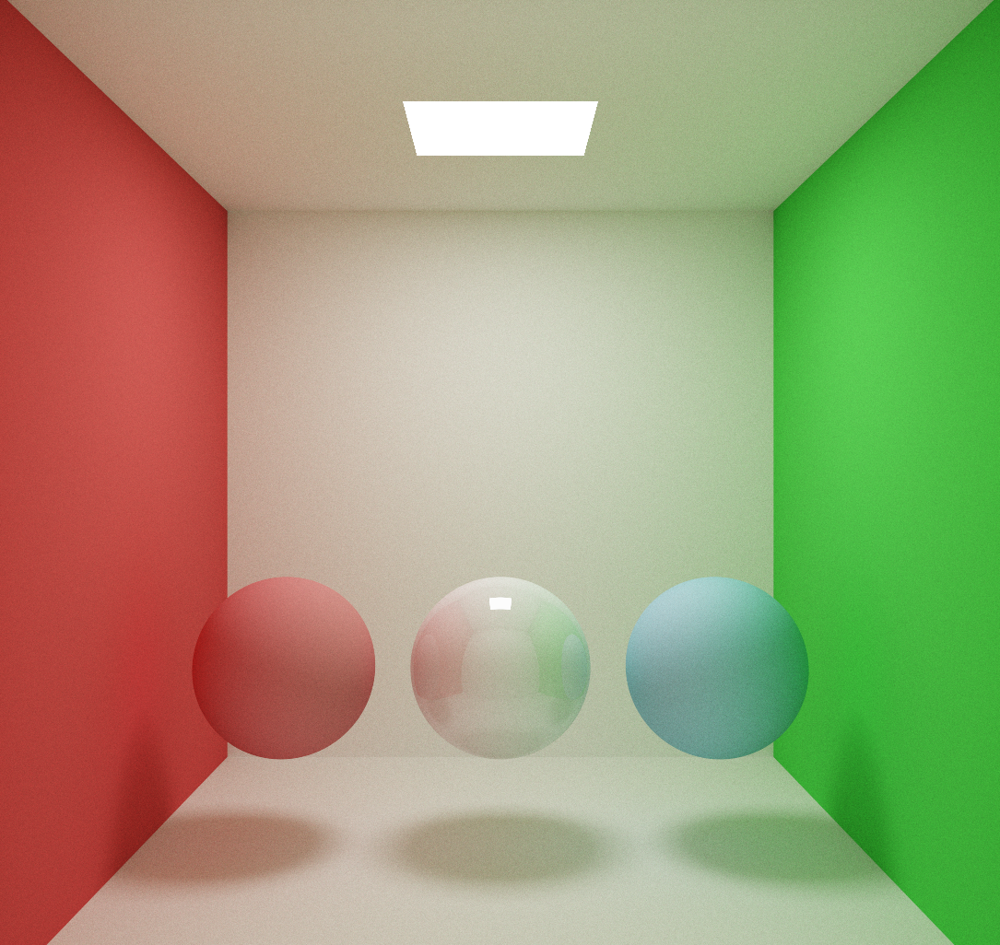
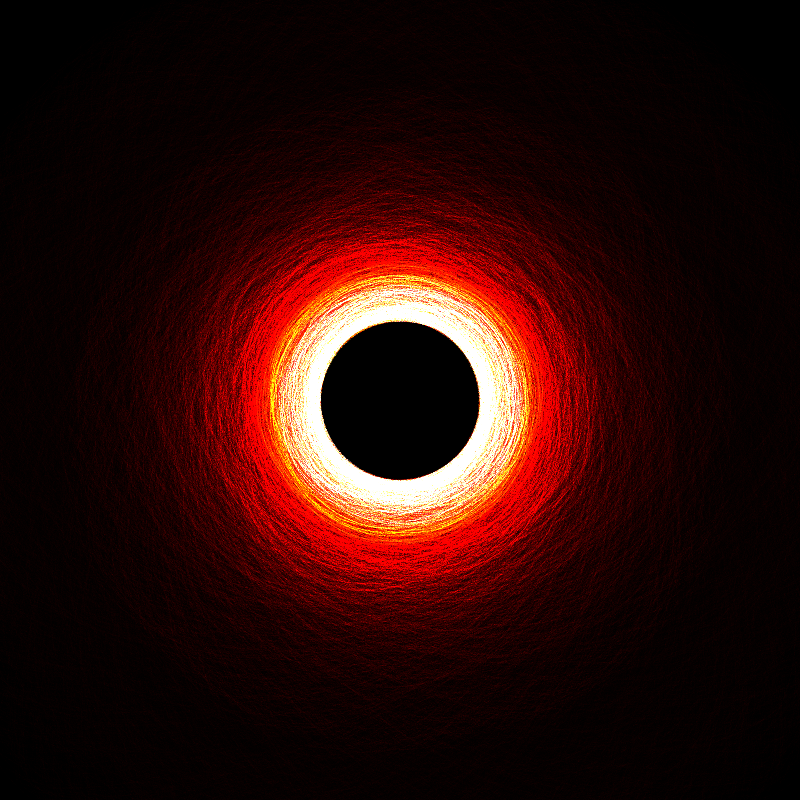

About
I am currently studying for an MSc in Computational Statistics and Machine Learning at UCL. My recent research interests include generative models, especially world models and diffusion models, representation learning, and causal inference.
News
- 01/2026: Featured on the UCL Computer Science Spotlight series.
- 12/2025: Started research on Long-Horizon Consistency in World Models supervised by Jagmohan Chauhan.
- 10/2025: Co-Heading the Machine Learning Tutorials series for the UCL Artificial Intelligence Society.
Projects
-

Pico-Banana
A PyTorch implementation of a Denoising Diffusion Probabilistic Model (DDPM) trained on FashionMNIST.
Python, PyTorch
[Code] -

Cart-Pole RL Agent
A reinforcement learning agent built from scratch in C++, trained on the cart-pole environment.
C++
[Code] -

Tiny-LLM
A lightweight transformer-based language model implementation in PyTorch.
Python, PyTorch
[Code] -

CUDA-Accelerated Raytracer
A high-performance GPU-accelerated raytracer built with CUDA and OpenGL.
C++, CUDA, OpenGL
[Code] -

Debris Disk Renderer
A C++ 3D rendering engine for visualizing and simulating debris disks around solar systems.
C++, OpenGL
[Code]